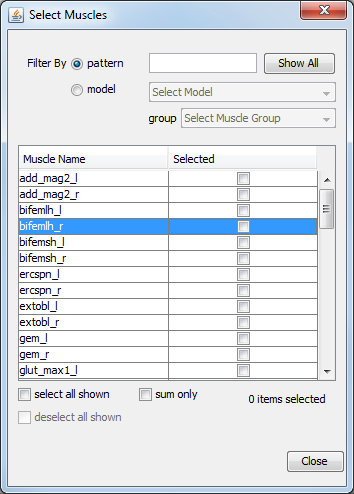
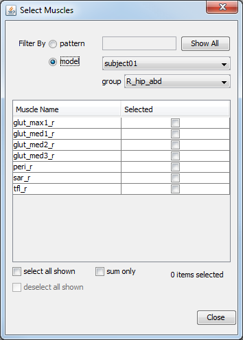

When you press the Muscles… button from the curve creation panel, the dialog window shown below in Filtering Options is displayed. This window is used in many places throughout OpenSim and allows users to select from a potentially long list of names using different grouping mechanisms. In this case, the window contains the names of all the muscles in the model. To select a few muscles, you can scroll down the list and check the checkboxes next to the muscles of interest. If you want to add the quantity over all selected muscles, check the sum only box at the bottom of the window.
For multiple selections, however, the window offers more powerful filtering mechanisms: pattern filtering and muscle group filter (both explained below). If a name is selected and the filtering rules change (e.g., switched from pattern to muscle group or vice versa), selected entries remain selected. You can show all the names available for selection by pressing the Show All button. The topics covered in this section include:
Pattern Filtering
|  | In cases where the names of interest have some common suffix, prefix, or any common substring, select the filter option for pattern and start typing the pattern into the text box next to the word "pattern." As letters are typed in, the list of available names shortens so that only the names matching the typed-in pattern (case insensitive) are displayed. For example, if the user types the letter "g," then only muscles whose names contain the letter "g" are displayed in the list. This comes in handy when selecting muscles from the left side of the body if a naming convention (e.g., using the suffix "l" or the prefix "l") was used. Another example would be when selecting generalized coordinates from a model that contains the left and right knees. In this case, typing "kn" will likely filter out all but knee-related coordinates. |
|---|
OpenSim uses regular expressions, a search pattern language, to filter out items in the list of available names. Some characters have special meaning in regular expressions and can be used to speed up the filtering. These characters are explained below using examples:
Pattern | Filtered quantities |
^l_ | Matches all names that start with the substring l_ |
X$ | Matches all names ending in letter X |
.* | Wildcard, matches any sequence of 0 or more letters |
Muscle Group Filtering
|  | You can select muscles based on their function rather than their name. This can be done by defining a muscle group within the OpenSim model (.osim) file which contains muscles that perform a higher level function. For example, some of the models distributed along with OpenSim contain a muscle group with the name _R_knee_ext_ (for right knee extensors) that contains only the muscles rect_fem_r and vas_int_r. To limit display of muscle names to this muscle group, choose the radiobutton for model, and then pick the model and the specific muscle group in the model from the drop down menus. Only muscles belonging to the selected muscle group will be shown in the list. You still need to select the muscle(s) out of the filtered list. |
|---|
Selecting Items from the List
After filtering the names, you can select from the shown entries by marking individual boxes, selecting all shown entries using the select all shown checkbox, or deselect all shown entries using the deselect all shown checkbox.
| In some contexts, the sum only checkbox is enabled. If this option is checked, you will add the quantity over all selected muscles. At all times, a current tally of the number of selected items is displayed in the bottom-right corner of the window. |
{kind=link}
{kind=link}